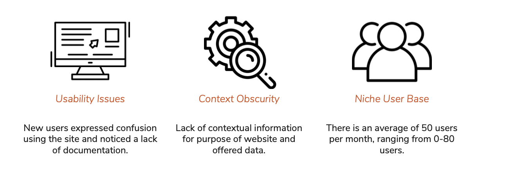

LC for Robots is a subset of the Library of Congress Labs (LC Labs) that provides access to APIs, bulk data downloads, and other related computational access points for Library of Congress collection data. Their goal is to provide machine- readable access to its digital collections in order to make their data more widely accessible to the general public. Our team completed an eight-month collaborative project to assess our clients’ needs, understand our target users, develop a UX recommendation to meet those needs, and evaluate the impact of our designs.
Three stages: Research, Design, Evaluation
LC for Robots needs improved information architecture and instructional material to better support current users and attract new users to the Library of Congress’ vast collections of data.
In order to reach a broader audience including researchers, analysts, students, and other inexperienced users, our team’s goals include: 1. Improve the time it takes users to find and access the information they are looking for. 2. Categorize all resources logically. 3. Incorporate instructional material and examples of use cases for datasets and APIs to improve accessibility for new users. 4. Refine the list of bulk data downloads and APIs to feature the most popular resources. 5. Improve upon the already existing LC for Robots branding guidelines.